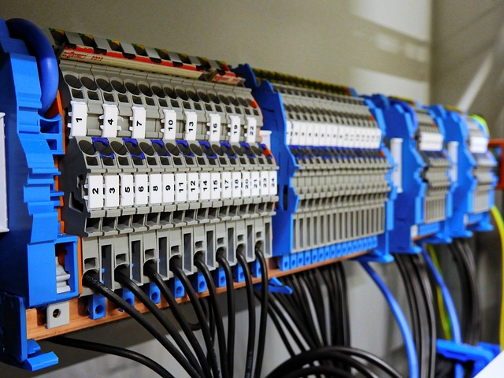
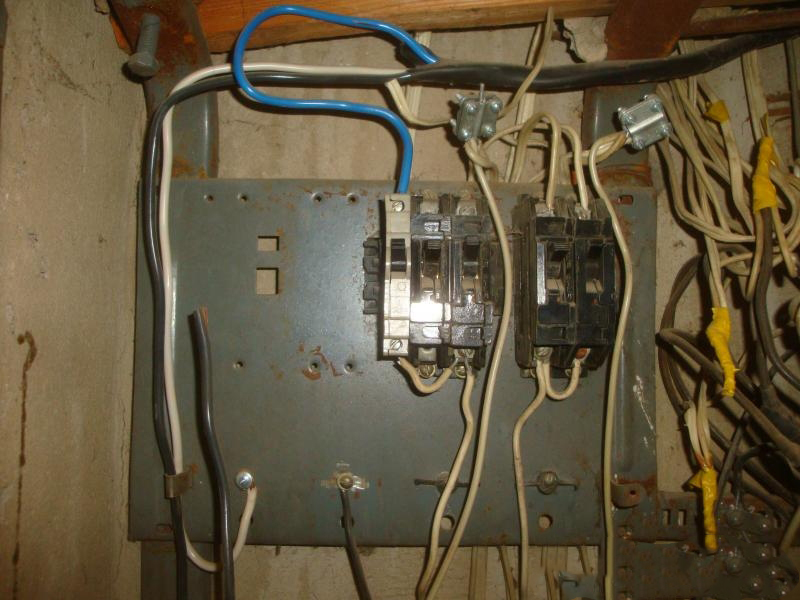

Что такое "kharkiv-electro"?
Это группа профессиональных электриков. У нас есть специализированное оборудование и инструмент для выполнения качественной работы, согласно стандартам. Имея большой опыт работы и знания наши специалисты готовы выполнить, максимально эффективно и быстро, поставленную задачу. Работаем с готовыми проектами, планами, чертежами или же делаем свой в согласии с вашими потребностями и пожеланиями.
Что такое электромонтажные работы?
Электромонтажные работы - это специальные строительные работы, выполняемые при возведении и реконструкции зданий и сооружений различного назначения, связанные с монтажом электрических сетей (воздушных и кабельных линий электропередачи, токопроводов, электропроводов и др.) и электрооборудования (электрических машин, распределительных пунктов, пультов управления и др.).
Важность новой электроповодки

К сожалению не все понимают важность замены старой электропроводки или качественного монтажа новой. Некоторые люди делая ремонтные работы в старых квартирах или домах не меняют проводку и часто пользуются старой алюминиевой. Что к сожалению приводит к перегреву провода, отгоранию соединений, короткому замыканию и даже пожару. А в случае отсутствия качественной защиты проводов автоматическими выключателями вероятность возникновения выше перечисленных проблем, и их последствий, возрастает.
Поэтому при строительстве новых зданий или ремонте старых, целесообразно произвести расчеты нагрузки электро потребителей и заложить провода подходящего сечения.Кроме того необходимо подключить автоматические выключатели для защиты электро потребителей и провода. Для защиты человека от поражения электрическим током устанавливают УЗО(устройство защитного отключения). Установку этого и другого оборудования необходимо обговорить со специалистом.
основные работы
| № | тип работы | сложность | колличество | цена в гривне |
| 1 | монтаж подрозетника | пеноблок | 1шт. | 60 |
| 2 | кирпич | 70 |
| 3 | бетон | 85 |
| 4 | штроба | пеноблок | 1м. | 10 |
| 5 | кирпич | 15 |
| 6 | бетон | 30 |
| 7 | прокладка провода | без гофры | 1м. | 8 |
| 8 | в гофре | 10 |
| 9 | монтаж ШР(щитовой) | пеноблок | 1шт. | 200-350 |
| 10 | кирпич | 300-450 |
| 11 | бетон | от 400 |
| 12 | установка фурнитуры | розетки и выключатели | 1шт. | 20 |
| 13 | крепление подключение светильников | | 1шт. | 50 - 100 |
| 14 | крепление подключение люстры | | 1шт. | 70 - 200 |
примеры работ
Интересные факты
"Беззащитная проводка"

Несмотря на опасность эксплуатации не защищенной электро проводки, во многих старых домах и квартирах либо нет автоматических выключателей, либо они не выполняют свое предназначение. Проще говоря: при большом токе в электросети(что бывает из-за высокой суммарной мощности потребителей или короткого замыкания) автоматы не выключаются. Что приводит к отгоранию проводов и даже пожару. Кто то может говорить, что у него так всю жизнь было и ничего не случилось. И хорошо, что так. Но зачем играть с огнем? Помните: несколько автоматов защиты обойдутся дешевле!
Заниженное сечение кабеля
Еще одной проблемой, может стать неподходящее сечение провода и автомата защиты. Так как толщина кабеля рассчитывается относительно нагрузки на него, неправильный выбор может привести либо к плавлению изоляции и перегоранию провода, либо к большим растратам(если покупать без необходимости провод слишком высокого сечения). Почему так получается? При повышении тока может срабатывать автомат защиты, и некоторые "умники" просто ставят более мощный автомат. После чего конечно он перестает "выбивать", но зато благополучно плавятся провода!